Island červenec 2023

Když jsme se minulý rok vrátili z Dolomit, tamější hory mě okouzlily natolik, že jsme doma zavedli nové pravidlo: každý rok absolvujeme minimálně jednu cestu do přírody (kvůli mě) a minimálně jednu cestu do města (kvůli Kláře). A protože Island v našich představách představoval ideální destinaci z kategorie “příroda”, rozhodli jsme se prozkoumat, co všechno by cesta obnášela.
O Islandu jsem už dříve slyšel spoustu pozitiv. Zvláště pak od kamarádů skautů, kteří se na malý ostrov v severním Atlantiku pravidelně vydávají na dlouhé treky, při kterých obdivují obrovskou rozmanitost tamních přírodních krás. A i když mě představa spatřit na vlastní oči všechny ty vodopády, gejzíry, hory a kdoví co ještě, lákala, bylo tu i něco, co mi nahánělo strach. Historky o bláznivém počasí, které se mění každých 10 minut, silném větru, který ulamuje dveře od aut, nebo o polární noci, která na půl roku zahalí celý ostrov do černočerné tmy, mě spíše děsily, než aby mi říkaly: “Kupuj letenku a leť!”
Když jsem ale začal studovat, o čem že to ten Island vlastně je, zjistil jsem, že mnoho mých obav pramení z mylné představy o tom, že člověk jede na Island proto, aby šel na trek. To ale není pravda. Dokonce bych řekl, že více lidí jezdí na Island “nalehko”. A jak se později ukázalo, příroda je na ostrově sice drsná, ale pokud se na ni člověk dobře připraví a při návštěvě používá selský rozum, není se čeho bát.
Čeho jsem se bál nejvíce, bylo počasí, které nás na našich předchozích cestách už několikrát zastihlo nepřipravené. Rozhodl jsem se proto, že si na Island zabalím pohorky a před cestou si koupím nepromokavé kalhoty, které v kombinaci s kvalitní větrovkou vytvoří perfektní ochranu proti nepříznivému počasí. Pár dní před odletem ale Klára objevila v brněnském obchodu Fjällraven nádherná nepromokavá poncha, která nakonec zvítězila nad neforemnými a v budoucnu těžko využitelnými kalhotami. Na Island jsem tím pádem odjížděl s velkým respektem, ale i s vírou, že jsme dobře připraveni!
DEN 0
Na co jsem ale nebyl připraven, byla změna v letovém řádu. Jen pár hodin před tím, než jsme chtěli vyrazit směr pražské letiště, odkud odlétalo naše letadlo, jsem obdržel SMS zprávu od letecké společnosti PLAY, že náš let je zrušen. Když jsem otevřel webovou aplikaci s detailem letu, zjistil jsem, že let nebyl zrušen, ale přesunut na další den.
Protože jsme byli už sbalení, rozhodli jsme se jet do Prahy, zajít si na dobrou večeři, přespat v hotelu a ráno se v klidu přesunout na letiště.
Myslím, že nic zajímavého se při cestě nestalo, proto alespoň nasdílím jednu historku, která poslouží jako voda na mlýn některých konspiračních teorií. Několik dní před odletem jsme se začali dívat na seriál Atypical. Seriál zobrazuje středoškolského studenta Sama, který trpí autismem. V průběhu první série jsem na sobě začal pozorovat podobné příznaky autismu, které se projevovaly i u hlavního hrdiny. Na základě toho jsem si udělal online test, který odhalil, že moje obavy byly na místě. Když jsem o tom řekl Kláře, i ona si udělala test. Po jeho dokončení zjistila, že je na tom ještě hůře než já. A teď ta konspirace - v našem oblíbeném pražském hotelu jsme cca 3 hodiny po dokončení testu dostali pokoj pro postižené. Je tím pádem jasné, že Google a Netflix nás odposlouchávají a prodávají informace jiným subjektům!
A nyní zase zpět k Islandu.
DEN 1
Na mezinárodní letiště v Keflavíku jsme dorazili po naprosto nekonečném (čti čtyřhodinovém) letu ve 3 hodiny odpoledne místního času. Čas na Islandu se řídí časem UTC, tzn. že v zimě, resp. v létě je na ostrově o 1 hodinu, resp. o 2 hodiny méně než v Česku.
Hned po příletu jsme zašli do pobočky společnosti Payless a s pomocí upovídaného Poláka Charlieho, který seděl za přepážkou, jsme si půjčili prdítko značky Hyundai, model i10. Neměl jsem z toho úplně nejlepší pocit, protože vždycky, když vidím vůz značky Hyundai, vzpomenu si na slova svého bývalého kolegy Jirky Polcara: “Kdo si koupí Hyundaie, nadosmrti kunda je!” Na druhou stranu ale musím uznat, že i když autíčko nemělo úplně nejvýkonnější motor a v některých islandských kopcích se hodně zadýchávalo, v průběhu naší dovolené nás zavezlo úplně všude, byl na něj spoleh a hlavně - jak ukazuje další fotka - všechno se do něj vlezlo!
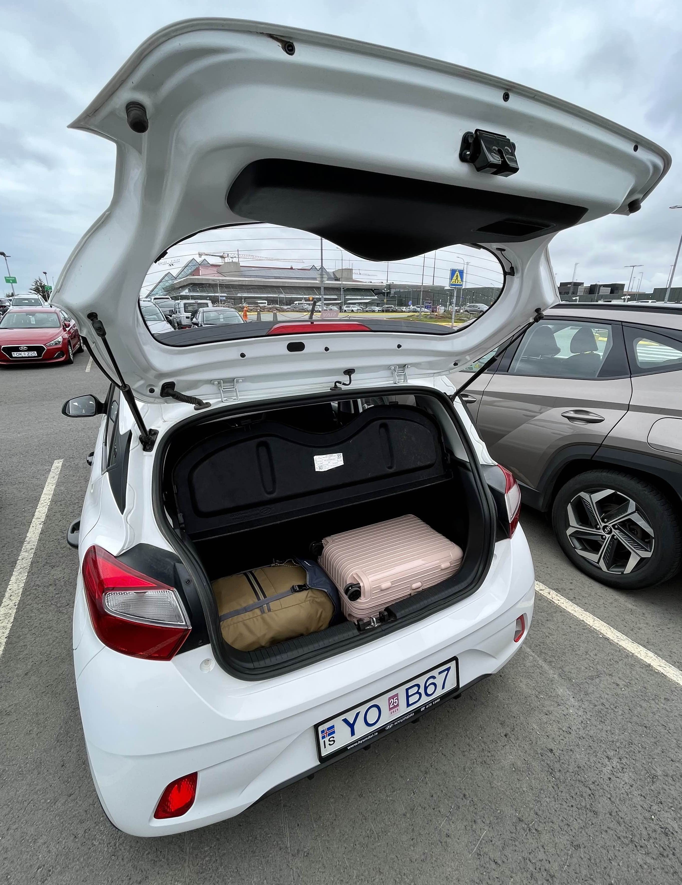
Plně naložený vůz Hyundai i10.
Než jsme si půjčili auto, trošku nám vyhládlo, zašli jsme si proto na brzkou večeři do stylového Library bistra v Keflavíku a poté vyrazili na tři hodiny dlouhý přejezd do města Vík na jižní straně ostrova. Cestou nás čekaly dvě zastávky u dvou vodopádů.
První z nich se jmenuje Seljalandsfoss a je specifický tím, že padá z poměrně dlouhého převisu, takže jej lze po vyšlapané cestičce celý obejít! Díky své unikátnosti a velmi snadné dostupnosti z hlavní silnice č. 1 se jedná o jedno z nejvíce turistických míst na Islandu. My jsme k vodopádu ale přijeli až kolem 9. hodiny večer, takže jsme se na 60 m vysokou masu vody mohli podívat v klidu, bez zástupu dalších turistů!
Jen 30 km dál na východ se nachází druhý slavný vodopád - Skógafoss. Oproti tomu předchozímu je Skógafoss mnohem širší a nelze se schovat ve skále za ním. Je ale možné vyšplhat po 400 železných schodech na útes a podívat se, odkud 25 m široká řeka Skóga teče. U paty vodopádu zároveň začíná dálkový trek přes průsmyk Fimmvörduháls, který vede do známé oblasti Thórsmörk.
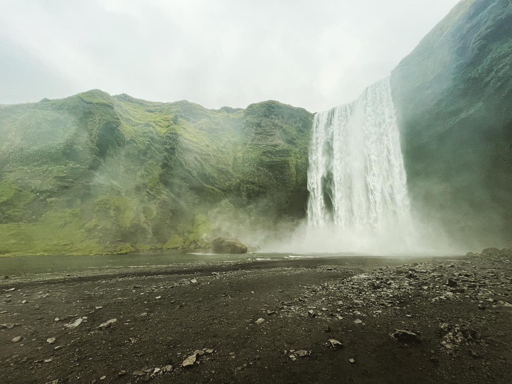
Majestátní vodopád Skógafoss.
Když jsme vylezli na útes, pršelo, bylo chladno, blížila se 10. hodina večer a na mě začala padat únava. V tu chvíli jsem si uvědomil, jak skvělý nápad to byl pořídit si naše poncha! Bylo chladno? Ano. Pršelo? Ano. Nám ale bylo teplo, byli jsme v suchu a navíc - hned první den jsme viděli dva krásné vodopády! Když jsme proto po dalších 30 minutách přijeli do městečka Vík, měl jsem skvělou náladu a byl jsem moc vděčný za to, co jsme hned první den zažili.

Já a můj nový nejoblíbenější kus oblečení!.
DEN 2
Protože jsme přespávali v malé útulné chatce, kterou jsem zarezervoval přes Airbnb, neměli jsme v ceně pobytu snídani. Rozhodli jsme se proto využít služeb nedaleké hipster kavárny, která vznikla přestavbou žlutého školního autobusu. V autobusu bylo možno si sednout, vypít horký nápoj a sníst muffin, nebo bagel.
Po snídani začal náš program, ten den věnovaný nejznámějším atrakcím v okolí Víku, na pláži Reynisfjara. Ta se pravidelně dostává do mnoha turistických žebříčků jakožto jedna z nejkrásnějších pláží světa. A není se co divit. Černý sopečný písek v kombinaci s 60 m vysokými čedičovými sloupy vystupujícími z moře a neobvyklými útesy vytváří kulisu jako žádnou jinou!
Pláž má ale i svoji odvrácenou tvář. Na internetu se vyskytuje mnoho článků o tom, že na pláži se vyskytují tzv. plíživé vlny. Jedná se jev, kdy se stočí vítr z moře směrem k pláži, takže přicházející vlna je rázem značně větší než vlna předchozí. Pokud se v tu chvíli vyskytuje člověk blízko břehu, vlna vezme člověku půdu pod nohama. Poté stačí zavrávorat a spadnout do moře, odkud je poté velice obtížné se dostat. Příklad stejné události ve Francii zachycuje toto video (osobně jej nedoporučuji slabším povahám). Pláž si takto v minulosti vzala několik lidských životů a pár let byla dokonce úplně uzavřena. Před jejím znovuotevřením byla ke vstupu na pláž umístěna varovná tabule, na které je jasně vidět, kam v daný den člověk může chodit a kam ne. Já osobně jsem se o těchto informacích dozvěděl až po návštěvě a naprosto upřímně - i když jsem varovnou tabuli viděl, moc velkou pozornost jsem jí nevěnoval. V den návštěvy jsem byl spíš rád za to, že mám poncho, které mě chrání před deštěm, a zároveň nemám děti, které by si chtěly hrát v písku. A že jich tam bylo!
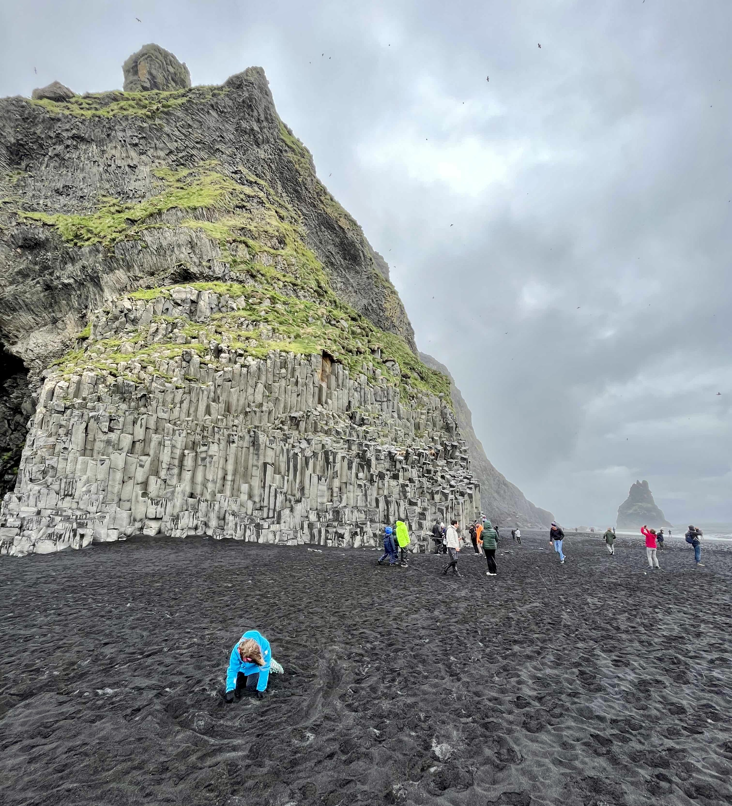
V době pořízení fotografie bylo kolem 10 °C, pršelo a foukal vítr. Jak je vidět na fotce, pojem “dovolená u moře” dostává na Islandu úplně nový rozměr.
Jen 30 km na západ od Víku se nachází Sólheimajökull, nejdelší jazyk ledovce Mýrdalsjökull. Sólheimajökull měří 8 km a Google jej označuje jako “malebný ledovec”. Kousek od hlavní silnice č. 1 jsme nechali auto na parkovišti a po vyšlapané cestě jsme se prošli až ke konci ledovcového splazu. Mnoho lidí na místě využívalo služby cestovních agentur, které nabízejí túry po ledovci. My jsme ale nastoupili zpět do auta a vydali se na fish and chips do Mia’s country van poblíž vodopádu Skógafoss, u kterého jsme byli předchozí den večer. Když na nás přišla řada a my dostali jídlo, před food truckem byly všechny suché lavičky obsazené a my si tak museli vybrat jednu z těch, které po dešti ještě nikdo neosušil. Nechtěli jsme plýtvat papírovými kapesníky, kterých jsme měli nedostatek, proto jsme se rozhodli vzít si poncha a sednout si na lavičku v nich. Když jsem si ale sedal, neuvědomil jsem si, že poncho má na bocích větrací otvory. Oběd ani následnou kávu v podniku Freya Café jsem si tím pádem moc neužil - studil mě zadek.
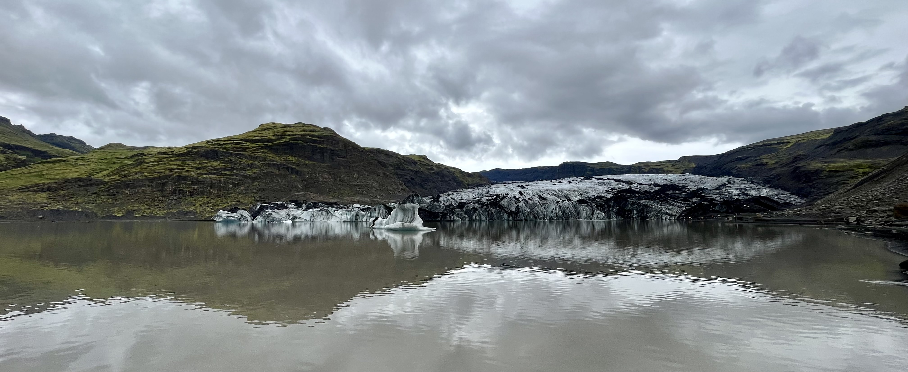
Malebný ledovec Sólheimajökull.
Po kávě jsme vyrazili na 7 km dlouhý trek k vraku letadla, kde poměrně dost foukalo, takže mi kalhoty hezky uschly. Kromě toho ale nehodnotím trek nijak zvlášť pozitivně. Fotky letadla nevypadají zle, ale jinak je to celkem nuda. Nejdříve se jde 3.5 km dlouhou cestou uprostřed měsíční krajiny k vraku letadla a potom tou stejnou trasou zase zpět. V rádiu cca 10 - 20 km není nic k vidění, pouze šedá placka tvořená štěrkem a černým lávovým prachem. Pokud bych jel na Island znovu, tento trek bych na 100 % vynechal.
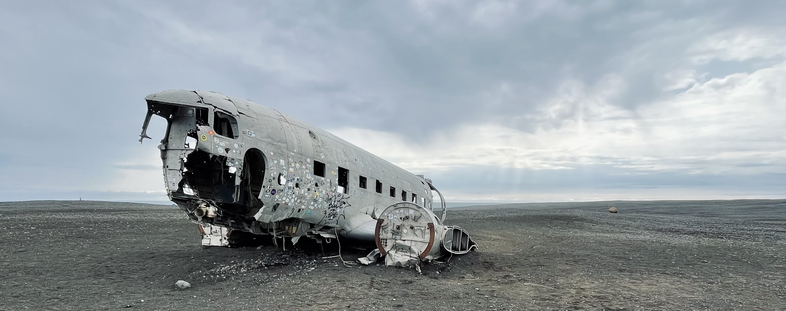
Vrak amerického armádního letadla Dakota DC-3, které leží v osiřelé krajině širokého lávového pole od havárie v roce 1973.
Po né moc záživné procházce nás čekala poslední zastávka dne - mys Dyrhólaey, který je zároveň nejjižnějším bodem pevninského Islandu. Turisticky atraktivní je mys zvláště z toho důvodu, že je tvořen vysokými útesy, z nichž je pěkný pohled na skalní bránu vystupující do moře. Ta slouží jako útočiště mnoha mořských ptáků, takže při bližším pohledu není zase tolik lákává jako na fotkách. Kromě skalní brány je ale z útesů vidět i pláž Reynisfjara, která na jedné straně útesů končí. Na druhé straně se potom návštěvníkům nabízí pohled na tzv. “Endless black beach” (v překladu “nekonečná černá pláž”), která v kontrastu se zelenými kopci za ní vytváří opravdu nádhernou scenérii.
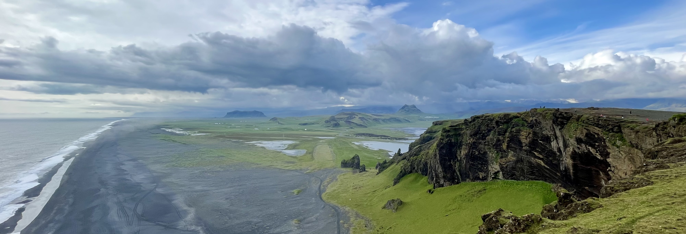
Jméno “Endless black beach” hovoří za vše.
Po náročném dni jsme si zašli na večeři do podniku Black Crust Pizza ve Víku, kde - jak už název napovídá - jsme si dali pizzu s černým okrajem. Protože bylo moc pěkné počasí, po večeři jsme se ještě prošli k místnímu ikonickému kostelíku s červenou střechou a vyšplhali jsme i k nedalekému hřbitovu, odkud se nám naskytl nádherný výhled nejen na celé městečko, ale i na okolní zelené kopce.
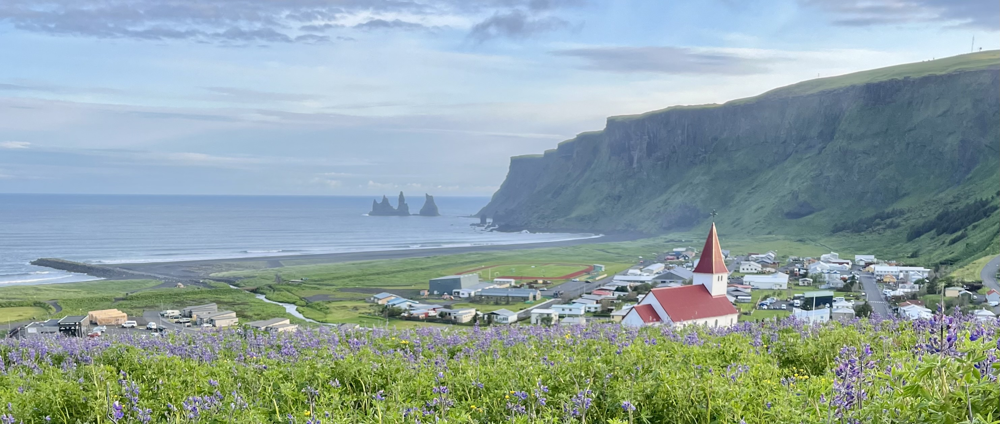
Pohled na kostelík v městečku Vík. V pozadí čedičové sloupy na pláži Reynisfjara.
DEN 3
Ráno jsme zašli na bagel do školního autobusu a po dvou nocích strávených ve Víku se vydali na východ. Po necelé hodině cesty jsme dorazili ke kaňonu Fjádrárgljúfur. Podél kaňonu vede turistická stezka, po které je možné dojít k železné vyhlídkové plošině. Z ní se nabízí výhled na pár menších vodopádů. Přestože jsem se na kaňon uprostřed sytě zelené krajiny hodně těšil, musím říct, že moje pocity byly v průběhu návštěvy dost smíšené. Kolem turistické stezky je vidět, že mnozí turisté ignorují značení a při honbě za co nejlepší fotkou vyšlapávají kolem cesty další chodníčky, které narušují původní ráz krajiny. Kolem jednoho místa na vyhlídkové plošině je dokonce umístěn i ostnatý drát, který má zabránit lidem přelézt zábradlí a šlapat po zelené trávě. Když ale odhlédnu od skutečnosti, že kaňon navštěvují pouze turisté a někteří z nich neprojevují respekt k danému místu, jedná se o skvělou zastávku na cestě po východním Islandu!
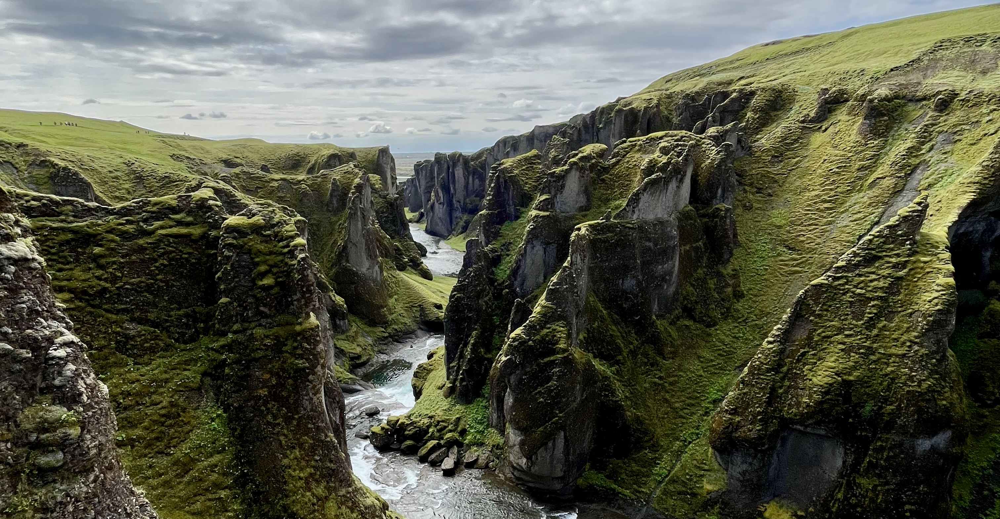
Pohled do kaňonu Fjádrárgljúfur.
Po krátké zastávce na oběd v městečku Kirkjubæjarklaustur jsme pokračovali dál po hlavní silnici č. 1. Na jižní části ostrova vedla cesta podél vysokých skal porostlých zelenou trávou, na druhé straně cesty - směrem k pobřeží - se rovná krajina často měnila. Jeli jsme kolem lávových polí, travnatých plání, na kterých se pásly ovečky a koně, nebo podél nekonečných lánů vlčích bobů. Ty na Islandu rostou skoro všude a mně osobně připomínají levandule. Dál na východ se ale ráz krajiny ustálil. Začal se totiž řídit zdejším pánem Vatnajökullem. Podle některých zdrojů se jedná o největší ledovec v Evropě. Ledovec, který je zapsán na seznamu UNESCO, zaujímá asi 10 % rozlohy celého Islandu a z hlavní cesty nejde přehlédnout. Masy ledu a sněhu se plazí mezi vysokými horami do údolí a vytváří ledovcová jezera.
K jednomu takovému jsme se v rámci naší další zastávky šli podívat i my. Jednalo se o jezero u ledovcového splazu Skaftafell. Jezero bylo ale hrozně velké, takže nebylo možné se dostat blízko ledovce. Ve výsledku se mi tím pádem zdálo, že jsme neviděli o moc víc, než předchozí den u ledovcového splazu Sólheimajökull.
Po ne moc záživné procházce jsme se vydali na druhou stranu od turistického centra do hor. Po asi 2 km jsme dorazili do nenápadného údolí, kde na nás už čekal vodopád Svartifoss. Ten patří k tomu nejlepšímu, co Island nabízí. V porovnání s ostatními vodopády na ostrově se jedná spíše jeden z těch menších. Svoji slávu si ale získal tím, že 20 m dlouhý proud vody padá ze stěny, která je tvořena geometricky přesnými čedičovými hranoly. Právě ty mnohým připomínají píšťaly kostelních varhan.

Vodopád Svartifoss, kterému se díky čedičové stěně přezdívá “černý vodopád”.
Po třech mini túrách jsem se už těšil na večeři a do postele. Ten den nás ale čekala ještě jedna zastávka u ledovcového splazu Svínafellsjökull. Zastávku nám doporučil Nasty, který ji dokonce označil za svůj highlight na jižním pobřeží. Po zkušenosti s předchozími ledovcovými splazy jsem upřímně neměl moc velká očekávání, ale nejednalo se o velkou zajížďku a navíc, když už jsme byli poblíž, říkal jsem si, že by byla škoda se tam nezastavit. A dobře jsme udělali!
Z hlavní silnice č. 1 vedla ke splazu kamenitá cesta, na které jsem se celou dobu bál, že píchneme kolo. Po asi 2 km jsme dorazili na prázdné parkoviště, kde jsme nechali auto a vydali se po vyznačené cestě k ledovci. Jak jsem zmínil výše, neměli jsme moc velká očekávání. Já si na cestu k ledovci navíc nevzal poncho a začínalo se smrákat, takže když jsme přišli na první horizont a ledovec nikde, měl jsem chuť se otočit a jít zpět k autu. Za druhým horizontem na nás ale vykoukla obrovská masa ledu, která se nezdála být vůbec daleko. Přidali jsme proto do kroku, cestu jsme si zkrátili přes nevyšlapané lávové pole a po chvilce se nám naskytl pohled jako žádný jiný. Stáli jsme u hnědého ledovcového jezera, ve kterém plavaly obrovské kry. Malé jezero obklopoval z jedné strany ledovec, z druhé strany potom vysoká hora kónického tvaru. Navíc jsme na místě byli skoro sami. Úžasný zážitek a určitě nejlepší ledovcový splaz na Islandu. Díky, Nasty!
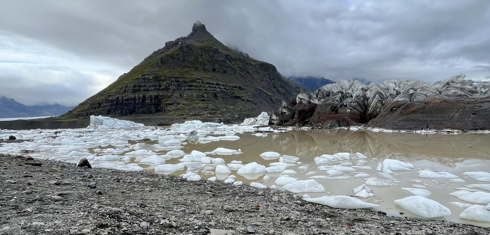
Ledovcový splaz Svínafellsjökull.
DEN 4
Čtvrtý den naší dovolené měl být podle mých představ volnější. Když jsme se tedy v 10:30 dostali na hotelové parkoviště, kde už stálo jen naše auto, a to i přesto, že předchozí den jsme měli problém zaparkovat, nijak zvlášť mě to neznervózňovalo.
První zastávku jsme si udělali u ledovcové laguny Jökulsárlón, která je tvořena tajícím ledovcem Breiðamerkurjökull. Ten ještě před 40 lety sahal až k moři, jenže postupným táním se stáhl dál do vnitrozemí a vytvořil lagunu, ze které proudí voda do moře. Z ledovce se postupně odlamují kry různé velikosti, které plují na hladině laguny a vytváří hodně fotogenické prostředí. Myslím, že na tomto místě nám skvěle vyšlo počasí, takže se mi zde podařilo vytvořit pěknou úvodní fotku pro tento článek.
Kry, které plují z laguny do moře, jsou často vyplavovány na pláž, která se nachází na druhé straně hlavní silnice. Díky těmto vyplaveným krám dostala pláž příhodné jméno - diamantová. Já osobně jsem na pláži čekal o dost víc “diamantů”, ale to bylo asi způsobeno skutečností, že všechny známé fotky této pláže jsou pořízeny v zimě.

Diamantová pláž, která by podle mě mohla být více diamantová.
Po krátké procházce jsme si zašli na jídlo do hladových oken u laguny. Já si koupil slanou palačinku se šunkou a sýrem, kterou mi k mému překvapení prodal Čech jménem Laďa. Než nachystal palačinku zákazníkovi přede mnou, stihl mi říct, že na Islandu žije už 10 let, vlastní food truck s palačinkami a bydlí v městečku Höfn… kam jsme ten den měli namířeno i my!
Když jsme dorazili do Höfnu, což v překladu znamená přístav, byl čas na kávu. Auto jsme proto nechali na parkovišti “v centru” a zamířili do naší vytipované kavárny. Hned u parkoviště ale stál coffee truck. Nevím, zda se tento pojem používá, ale byla to prostě dodávka, kde se místo jídla prodávala káva - proto ne “food truck”, ale “coffee truck”. Kapišto? Říkali jsme si, že tento coffee truck vypadá skvěle a že ho vyzkoušíme. Když jsme ale přišli blíž, paní baristka nám oznámila, že v celém městečku vypadl proud a že jediné, co nám může nabídnout, je limonáda. My jsme proto slušně odmítli a zamířili do původní kavárny. Tam nás už od dveří vítali zdejší zaměstnanci s tím, že v celém Höfnu vypadl proud - překvápko - a že nám nejenže neudělají kávu, ale ani si nic nemůžeme objednat, protože nefunguje jejich objednávkový systém. My se proto zeptali, zda můžeme v kavárně alespoň počkat, než proud znovu naběhne a objednat si poté. S tím neměl nikdo problém, a tak jsme si sedli a čekali. Po chvilce začaly číšnice všem zákazníkům roznášet chléb s máslem na účet podniku. Toto milé gesto ještě doprovázely slovy, že se omlouvají za nepříjemnosti, i když za ony za nic nemohly. Tomu říkám proklientský přístup! Po asi 15 minutách naběhl proud, což byl okamžik, který celá kavárna oslavila hlasitým potleskem. V tu chvíli jsem se cítil součástí Höfnu. :-)
Po kávě jsme si nechali věci v našem guesthousu a vyrazili na nedalekou pláž Stokksness. Pláž je významná hned z několika důvodů.
- Stejně jako všude na Islandu, i v tomto případě se jedná o pláž s černým písek. Nicméně! Zdejší duny jsou porostlé řídkou vysokou trávou, což už moc typické není.
- Za pláží se nachází minipohoří Vestrahorn.
- Na úpatí hor (nobo bych měl psát minihor?) nechali filmaři vybudovat repliku vikingské vesničky. Kulisy ale nikdy neodvezly, takže tam jsou dodnes.
Když dáme tohle všechno dohromady, máme tady zase jedno z nejvíce fotografovaných míst na Islandu. A podle mě naprosto právem!
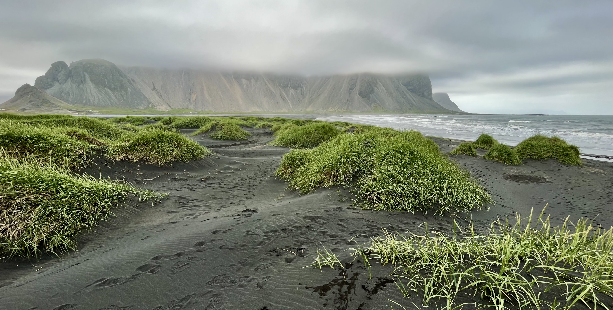
Kombinace černého písku, zelené trávy a jasně ohraničeného minipohoří Vestrahorn vytváří scénu jako z jiné planety.
Když jsme přijeli na pláž, nejdřív jsme zamířili na útesy, odkud jsme pozorovali tuleně. Abych byl přesný - myslím, že jsme neviděli TY tuleně, ale spíš TOHO tuleně. A nebýt Kláry, nevidím ŽÁDNÉHO tuleně. Zvíře vždycky na chvíli vystrčilo hlavičku nad hladinu rozbouřeného moře, řeklo nám “Ahoj!” a zase se ponořilo. I když jsme ale byli daleko a takto jsme ho zahlédli jen párkrát, měli jsme velkou radost z toho, že jsme viděli tohoto ploutvonožce ve volné přírodě.
Po seznámí s panem tuleněm jsme si prošli pláž, kde Klára nasbírala několik modrých mušliček a poté jsme zamířili do vikingské vesničky. Ta mě osobně dost zklamala. Na kulisách je vidět, že za posledních více než 10 let se na nich vyřádila na Islandu nemilosrdná matka příroda. V mých očích tím pádem vesnička danou oblast spíše hyzdí, než aby ji posouvala na další úroveň.
Po procházce jsme nasedli do auta a jeli zpět do Höfnu na večeři, konkrétně do malebné restaurace Otto Matur & Drykkur, kterou některé recenze na Googlu označují jako nejlepší restauraci na celém Islandu. To jsem v tu chvíli ale nebral moc vážně. Když jsme dorazili na místo, nebyl volný stůl. Paní číšnice nám proto donesla židličky a usadila nás u baru, kde jsme asi 20 minut čekali, než se náš stůl uvolní. Z minimalistického menu o pěti jídlech jsem si vybral dušené jehněčí maso s kořenovou zeleninou a pečenými brambory. Klára si objednala stejné jídlo, jen s tím rozdílem, že namísto jehněčího masa ochutnala maso hovězí. A jak to dopadlo? Ač jsem recenzím na Googlu věnoval minimální pozornost a moc jsem jim nevěřil, nakonec jsem jim musel dát za pravdu. Jednalo se totiž o jedno z nejlepších jídel v mém životě! Měkoučké maso přelité skvěle dochucenou omáčkou vytvořilo už tak bohatý gastronomický koncert, který jsme zakončili nevšedním rebarborovým koláčem se zakysanou smetanou. Naprostý strop! 10/10!
Mic drop.
DEN 5
Protože městečko Höfn bylo nejvýchodnějším bodem naší cesty a všechny zajímavosti z okolí jsme vyčerpali předchozí den, byl čas na 550 km dlouhý přejezd do Reykjavíku. Ten nám měl kvůli nejvyšší povolená rychlosti 90 km/h zabrat skoro 7 hodin. Nebyl proto čas na žádné dlouhé vyspávání. Ráno jsme si přivstali, zašli na rychlou snídani a v 9 hodin jsme už seděli v autě.
Po 1 zastávce na benzínové pumpě, 1 zastávce na oběd a celkem 5 hodinách strávených za volantem jsme konečně dorazili k jednomu z vrcholů celé naší dovolené, a to dlouho očekávanému gejzíru! Píši “dlouho očekávanému”, protože kolem toho byla u nás doma dlouhá diskuze. Já na gejzír jet nechtěl. Jednalo se o poměrně velkou zajížďku a pokud jsem si měl vybrat mezi možností A) strávit za volantem 7 hodin a vidět gejzír, nebo B) strávit za volantem 5,5 hodiny a zastávku udělat jinde, volil bych možnost B). Klára mi ale jasně řekla, že je jí prakticky jedno, jaký budeme mít na Islandu program, ale musíme vidět gejzír. Proto jsme “udělali kompromis” a jeli jsme se podívat na gejzír.
V jasně ohraničeném přírodním areálu Haukadalur, kam se neplatil vstup, bylo gejzírů více. Přestože aktivní byl pouze jeden, prakticky všude se kouřilo ze země a ve vzduchu byla cítit síra. U některých jezírek by ani člověk neřekl, že se v nich vaří voda. Všudypřítomné varovné cedule ale přesvědčovaly o opaku. Dvěmi největšími atrakcemi v relativně malém areálu jsou bezpochyby dva největší gejzíry v dané oblasti. Prvním z nich je praotec Geysir. Přestože jeho činnost je přímo závislá na sopečné aktivitě a tudíž velmi nepravidelná, jedná se o gejzír, který dal všem ostatním gejzírům jméno. Asi 20 m od Geysiru se nachází turisticky o něco zajímavější gejzír Strokkur. Ten patří k nejaktivnějším gejzírům na ostrově. Sloupec vody vysoký 15 - 30 m se objevuje zhruba každých 10 minut. My jsme ho zastihli 3x a byl to skutečně zážitek!
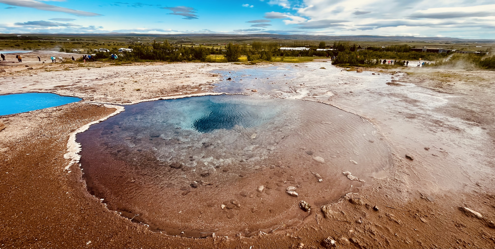
Geotermálním údolí Haukadalur. Vlevo vzadu Geysir. Vpravo vzadu čekají návštěvníci na to, co předvede Strokkur.
Z údolí Haukadalur jsme se přesunuli jen o 10 km dál k vodopádu Gullfoss. Ten patří k jedněm z nejmohutnějším vodopádů na ostrově. Členité údolí rozděluje širokou řeku na dvě kaskády, které mají celkovou výšku 32 m. Přišlo mi, že ze spodní kaskády se valí taková masa vody, že ani nebylo vidět na dno kaňonu. Přestože nám skvěle vyšlo počasí, takže jsme u vodopádu viděli i duhu, mě osobně zase tolik nenadchl. Vodopády z prvního dne se mi rozhodně líbily mnohem víc.
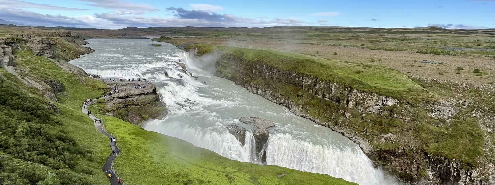
Vodopád Gullfoss, týž zvaný Zlatý vodopád.
Po procházce k vodopádu už byl zase večer, takže jsme se stavili na rychlou večeři a potom pokračovali do Reykjavíku. Hlavní město Islandu mi hned ze startu trošku připomělo Brno. Když jsme totiž přijeli k hotelu, celé hotelové parkoviště bylo obsazené a paní na recepci nám sdělila, že musíme přes noc zaparkovat na placeném městském stání. Když jsem ale od hotelu odbočil do vedlejší ulice a zjistil jsem, že polovina parkovacích míst v dané zóně je stále volná, uvědomil jsem si, že nikde to nemůže být tak špatné jako v Brně.
DEN 6
Předposlední den naší dovolené měl naprosto jasný plán: ráno přeparkovat auto na hotelové parkoviště, dopoledne si projít nejznámější památky Reykjavíku a odpoledne hurá na moře pozorovat velryby! Když jsme ale vyšli z hotelu, bylo chladno, hrozně moc foukalo a Klára už v tu chvíli říkala, že nám výpravu za velrybami určitě zruší. Já jsem tipoval, že se na moře sice vypravíme, ale na lodi zemřeme. A jak to tak většinou bývá, pravda byla někde mezi.
Při dopolední procházce po hlavním městě Islandu jsem docela trpěl. Měl jsem na sobě tričko, košili, bundu a čepici a pořád mi byla zima. Nepřívětivé podmínky jsme ale nějak zvládli a postupně se podívali k následujícím památkám.
- Vila Höfdi. Dřevěná vilka postavená v roce 1909, která původně sloužila jako sídlo francouzského konzula, ale do povědomí širší veřejnosti vstoupila až o 77 let později. V roce 1986 se totiž ve vilce sešel tehdejší americký prezident Ronald Reagan se svým sovětským protějškem Michailem Gorbačovem a společně se domluvili na tom, že nebudou rozmisťovat rakety středního doletu na území Evropy. Tento akt byl později označován jako počátek konce studené války.
- Sun voyager. Ocelová socha připomínající loď a zároveň jeden ze symbolů Reykjavíku.
- Kostel Hallgrímskirkja. Luteránský kostel představuje největší dominantu města. Díky své poloze na vrcholu kopce je dobře viditelný skoro z celého širšího centra Reykjavíku. Kostel je známý především svojí unikátní architekturou, která mě osobně připomíná histogram symetrického pravděpodobnostního rozdělení.

Bylo asi 11:30, když mi cestou po hlavní nákupní ulici Skólavördustígur směrem do přístavu zazvonil telefon. Volala paní z cestovní agentury, že nám kvůli špatnému počasí zrušili naši cestu za velrybami. Místo zrušené cesty ve 14 hodin nám ale nabídla cestu ve 13 hodin. Moc jsem nechápal, jak nám může nabízet jinou cestu jen o hodinu dřív, když před chvílí řekla, že podmínky na moři nejsou vyhovující. Paní mi vysvětlila, že počasí neovlivní, ale ve 13 hodin vyráží z přístavu větší loď, která podmínky na moři zvládne. To mi stačilo, abych s cestou souhlasil.
Když jsme po rychlém obědě dorazili do kanceláře cestovní agentury, kde bylo nutné vyzvednout palubní vstupenky, nad přepážkami jsem si všiml světelné tabule se seznamem všech výprav na moře, které se ten den organizovaly. U naší plavby v kolonce “podmínky na moři” svítila hodnota “very rough” (v překladu “hodně drsné”) a v závorce byla uvedena výška vln mezi 1,5 - 2 m. Pokud by byla výška vln vyšší než 2 m, plavba by byla zrušena. Musím se přiznat, že v tu chvíli jsem malinko znervózněl, ale na druhou stranu jsem věřil tomu, že náš ledoborec Andrea plavbu zvládne.
Krátce po tom, co jsme vypluli z přístavu, k nám promluvila kapitánka lodi. Ta nás upozornila, že mořská nemoc je na plavbách velice častá. Přitom nám doporučila, abychom si vzali tablety proti mořské nemoci, nebo přinejmenším cucali nějaké bonbony, které její projevy potlačují. Také zdůraznila, že pokud nám bude špatně, máme jít ven a rozhodně nemáme zvracet do moře, ale máme použít pytlíky k tomu určené. Kapitánka nám taky doporučila, abychom trávili co nejvíce času venku na čerstvém vzduchu, odkud jsou velryby nejlépe viditelné a kde bývá lidem nejméně špatně. Po těch slovech se nám samozřejmě udělalo nevolno, proto jsme si navlékli zateplené overaly, které byly na lodi k dispozici, a vyrazili jsme se palubu.
Zateplené overaly měli oblečené všichni. A nebylo divu. Na palubě foukal tak studený vítr, že mě v tu chvíli hodně mrzelo, že jsem si dopoledne nekoupil pletené rukavice z ovčí vlny, po kterých jsem pokukoval. Když jsme ale vyjeli ze zálivu na širý oceán, zkřehlé prsty přestaly být mojí jedinou obavou. Vítr totiž nebyl jen studený, ale i silný, takže jsem po chvíli pochopil, co znamenají “very rough” podmínky na moři. Jak naše loď brázdila 1,5 - 2 m vysoké vlny, kymácela se nejen zepředu dozadu, ale i ze strany na stranu, což způsobilo, že ostatní členové posádky, ač nadopovaní tabletami proti mořské nemoci, začali odpadat jako hrušky. V zadní části lodi bylo vidět lidi sedící v poloze Supermana, v podpalubí zase každý druhý “odpočíval” s pytlíkem u pusy. Holt moře nesvědčí každému!
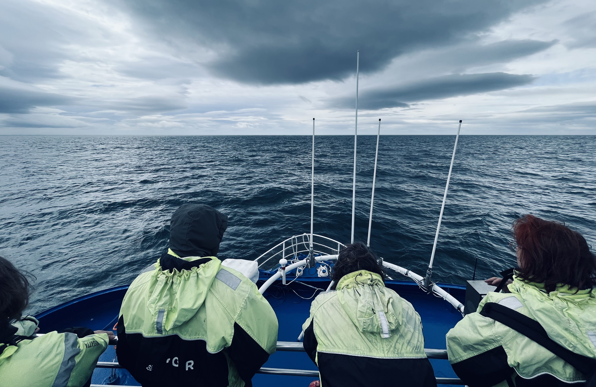
Vyhlížení velryb.
Nám sice špatně nebylo, ale já osobně jsem se bál vysokých vln. Občas se loď naklonila tak moc, že jsem si říkal, že se tam někde převrátíme a umrzneme v oceánu. Když jsem na tu horskou dráhu ale přestal myslet a věnoval se tomu, co se dělo na moři, cestu jsem si nesmírně užíval. Všude kolem nás totiž létali nejrůznější mořští ptáci, včetně roztomilých papuchalků, o kterých jsme mluvili snad celou dovolenou a hrozně moc jsme je chtěli vidět. To ale nebylo všechno. Po asi hodině cesty jsme přijeli na místo, kde jsme spatřili prvního keporkaka. Nejdřív vystříkla voda nad hladinu a potom se ukázal i zbytek těla. Po chvilce se stejný jev zopakoval, ale to už nám zvíře zamávalo i zadní ploutví. Velryba se potom vynořila ještě párkrát, pokaždé ale z dost velké dálky a jen na malý okamžik. V tu chvíli jsem si říkal, že to nejlepší je za námi. To jsem se ale mýlil. Pokračovali jsme totiž dál, než jsme narazili na místo, kde se nacházela další velryba. Nejdříve jedna, nakonec tři, které se postupně střídali ve vykukování na hladinu a následném ponoření s cílem obstarat si něco k snědku. Byla to nádherná podívaná, které se prý nepoštěstí všem a já za ni byl neskutečně vděčný! Cesta zpět byla ale nekonečná. Už jsme se taky necítili zrovna nejlépe, takže když jsme po 3,5 hodinách přijeli zpět do přístavu, byli jsme rádi, že máme zase pevnou půdu pod nohama.
Protože jsme to po plavbě už oba potřebovali, zastavili jsme se kávu do nádherné kavárny Reykjavík Roasters, poté jsme si prošli okolní uličky a náročný den jsme zakončili v islandské restauraci Íslenski barinn. Tam jsme se při čekání na volný stůl seznámili se dvěma americkými piloty. Po rychlé večeři v podobě hot dogu jsme se prošli do hotelu a šli brzo spát.
DEN 7
Před odpoledním letem do Prahy nás čekalo volné ráno v nejsevernějším hlavním města světa. Původně jsme měli v plánu navštívit slavnou Modrou laguna, která se nachází na ideálním místě mezi Reykjavíkem a Keflavíkem. Když jsem ale ráno začal studovat, jak to v Modré laguně chodí, zjistil jsem, že si musíme rezervovat vstup na konkrétní hodinu a k naší smůle byly všechny sloty už plně obsazené.
Protože oproti předchozímu dni byl krásné počasí s příjemnou teplotou okolo 15 °C, nakonec jsme se rozhodli se ještě jednou projít po malebných uličkách v centru Reykjavíku a navštívit pekárnu Braud & Co, kde jsme si koupili dopolední svačinu.
Kolem poledne jsme se přesunuli na letiště a frčeli domů!
DOJMY Z ISLANDU
- Island předčil všechna má očekávání. Myslím, že jsme tam nebyli naposledy. 🇮🇸
- Vík mě naprosto ohromil. Malé přístavní městečko obklopené zelenými kopci je prostě WOW. Cestou domů z dovolené jsem se dokonce díval, zda se ve Víku neprodává nějaká nemovitost. Bohužel, v nabídce nic nebylo. 🏠
- Unikátní přírodní scenérie jsou často jako z jiného světa. Nejvíce ze všech se mi líbily první dva vodopády a minipohoří Vestrahorn. ⛰️
- Sledování zvířat ve volné přírodě, zvláště pak velryb, byl nezapomenutelný zážitek! 🐳
- Hlavní silnice č. 1 připomínala hodně dobrou a v některých místech hodně širokou českou okresku. I proto mě občas štvala nejvyšší povolená rychlost 90 km/h. Myslím, že na některých místech by šlo jet rychleji. 🚙
- Bohužel se jedná o hodně turistickou destinaci. A protože na Island jezdí mnoho Američanů, na každém místě je slyšet americká angličtina. 🇺🇸
- Skoro ve všech službách jsme potkávali pracující cizince - Poláky, Španěly, Řeky, Italy, nebo jednoho Čecha, čímž zdravím Laďu Skálu do Höfnu! Od dovolené v zahraničí očekávám, že místní kulturu budu poznávat i skrze lidi. Tady jsme ale místních lidí potkali minimum. 📉